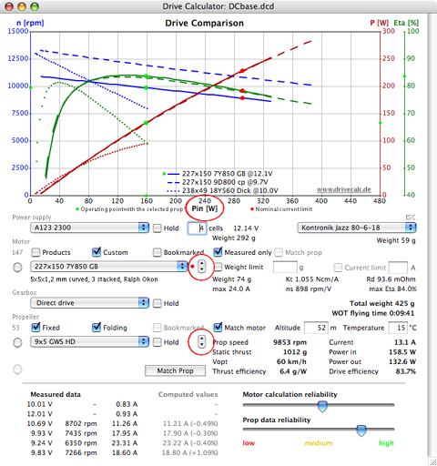

Comparing motors and propellers
Up to up three motors at a time can be compared by clicking the little selection arrows on the right side of the motor popup menu.

With the motor radio button selected, clicking the little down arrow once allows a second motor to appear in the graph. Use the popup menu list to select the desired motor. Each motor can have its own power supply, gearbox, and even prop settings.
By clicking on the down arrow once again, a third motor will appear and may be changed to the desired motor by using the motor popup menu list. Select any of the three by clicking on the little arrows. If the first motor is selected, clicking upward once again makes the third motor disappear. One more upward click and the standard motor graph reappears.
When comparing motors at different operating voltages, you may prefer to have the horizontal diagram axis refer to the electrical input power instead of the current. To change the horizontal graph axis from current 'I [A]' to power 'Pin [W]' left click on the graph axis title 'I [A]' above the cell/voltage input box. The horizontal axis will now display power instead of current.
If you wish to mask one of the curves, click on the respective axis title 'n [rpm]', 'Pout [W]', or 'Eta %'.
Following the same procedure you may compare up to three propellers in the diagram. The little arrows control in the Propeller area is used for this purpose.